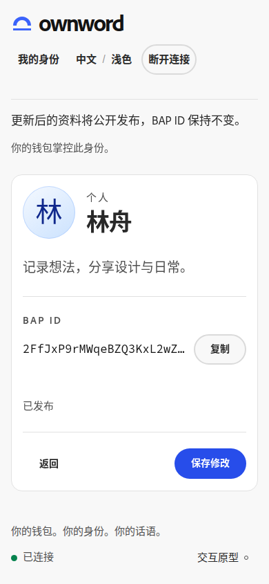

优先修复 · 01 / 02
确认页：标题被遮挡，标识被截断。
01 步骤切换要留下明确的阅读起点。从手机编辑页底部进入确认页后，标题位于屏幕 y≈31–75px，被高 120px 的吸顶页头完全遮住。建议在步骤切换时，让标题落在页头下方，并保留标题焦点。
02 核对时显示完整 BAP ID。当前确认卡将 BAP ID 单行省略，复制按钮仍在。建议允许标识换行，复制按钮保持独立，便于直接核对。完整标识要求引用核心认知第 6.3 节。

复现步骤与完成标准
- 中文浅色，390×844。连接模拟钱包并创建身份，进入“我的身份”。
- 打开“编辑资料”，修改简介，滚动至页底，点击“预览确认”。
- 确认页标题虽获得焦点，但 y≈31–75px，处于吸顶页头 0–120px 内。编辑页底部截图。
完成标准：进入确认页时，步骤和标题可见；BAP ID 完整可读、可复制；页面无横向溢出。